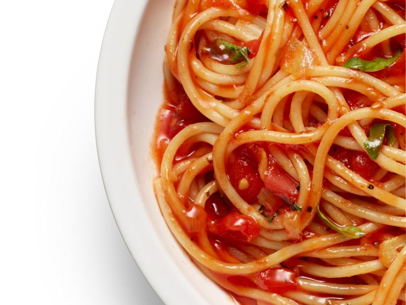

Ingredients:
- 3 tablespoons extra-virgin olive oil
- 4 cloves garlic, thinly sliced
- 1 small onion, diced
- 1 teaspoon dried oregano
- Kosher salt
- 1 28-ounce can whole peeled tomatoes, crushed by hand
- 1/2 cup chopped fresh basil
- 1 pound spaghetti
- 2 tablespoons unsalted butter, cut into cubes
Steps:
- Combine the olive oil and garlic in a large skillet. Cook over medium heat until the garlic is golden around the edges, about 3 minutes.
- Add the onion, oregano and 1 teaspoon salt. Cook, stirring, until the onion is soft but not browned, about 10 minutes.
- Add the tomatoes and their juices and 1/2 cup water; continue cooking until the sauce is slightly reduced, about 20 minutes.
- Stir in the basil and season with salt.
- Meanwhile, bring a large pot of salted water to a boil. Add the pasta and cook as the label directs. Reserve 1 cup cooking water, then drain.
- Add the pasta to the sauce along with the butter and 1/2 cup of the reserved cooking water. Increase the heat to medium and toss to coat, adding the remaining cooking water as needed to loosen the sauce.